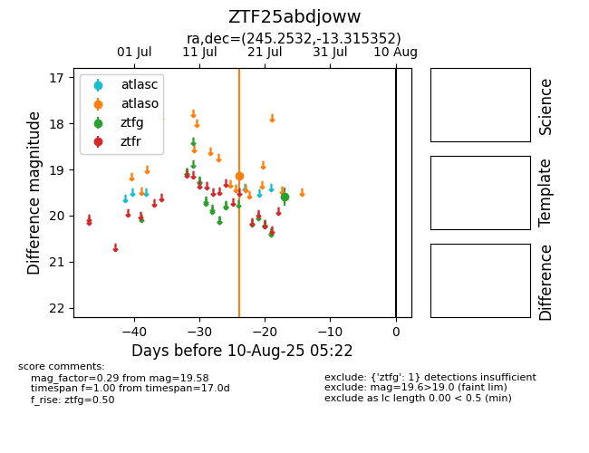

Target ZTF25abdjoww at 2025-08-19 09:59, see:
FINK: fink-portal.org/ZTF25abdjoww
Lasair: lasair-ztf.lsst.ac.uk/objects/ZTF25abdjoww
ALeRCE: alerce.online/object/ZTF25abdjoww
alt names
ZTF25abdjoww (ztf,fink)
coordinates:
equatorial (ra, dec) = (245.2532,-13.31535)
galactic (l, b) = (1.2526,+25.05457)
photometry
last atlaso=19.13, ztfg=19.50
1 atlaso, 2 ztfg detections
